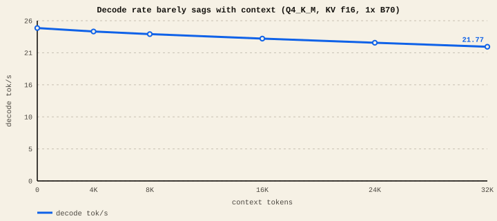
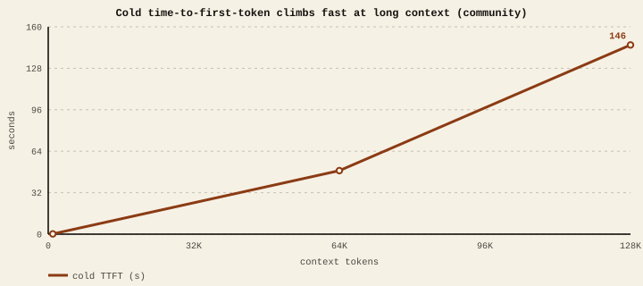

The short version
- Every request has two phases: prefill (read your prompt) and decode (write the reply, one token at a time).
- Decode holds up well: only ~12% slower from empty to 32K on our lane (with f16 KV).
- Prefill peaks a couple thousand tokens in, then eases off as context grows.
- Time-to-first-token is the one that hurts: a cold, long prompt can take tens of seconds before the first word appears.
- The real ceiling at long context is VRAM, spent by the KV cache.
Two phases, two very different speeds
When you send a prompt, the GPU first reads all of it at once — that's prefill, and it's fast and parallel (hundreds to thousands of tokens per second). Then it writes the answer one token at a time — that's decode, and it's the slower per-token number you usually see quoted (tens of tokens per second). The "tok/s" people brag about is almost always the decode rate.
Context length pushes on both, but differently.
Decode holds up
Single B70, Qwen3.8-27B Q4_K_M, f16 KV cache, context filled from empty to 32K. Lab-measured
Decode rate vs context

That gentle slope has a big caveat: it depends on keeping the KV cache at full precision. Switch to an 8-bit KV cache and this line falls off a cliff at long context — see the KV precision guide for the −51%-at-32K story.
Prefill peaks, then eases
Prefill rate vs context

Prefill is limited by raw compute, so it also tracks the card's clock and power — that's its own separate guide.
The one that hurts: time-to-first-token
Prefill throughput is high, but a long prompt is still a lot of tokens to chew before the first reply word appears — and if nothing is cached, that wait grows fast. A community B70 run on the newer vLLM XPU stack reported the shape below. Community
Cold time-to-first-token vs prompt size

For chat and coding with short-to-medium prompts, first-token latency is a non-issue. For "paste a whole codebase / long PDF and ask" workflows, budget real seconds (or more) before the reply starts — and lean on prompt caching so a big shared prefix only pays that cost once.
The real ceiling: VRAM
Speed isn't what stops most long-context runs — memory is. The KV cache grows with every token and, for a 27B model, a full 256K context needs roughly 16 GiB at f16 on top of the weights. On a 32 GiB card that's the wall you hit first. Options, in order of preference:
- Only ask for the context you need — a 32K limit is plenty for most work and keeps you in the fast, comfortable zone.
- Use an 8-bit KV cache to roughly halve KV memory (accepting the long-context decode hit).
- Add a second card (tensor parallel) for more combined VRAM and bandwidth — see Hardware.
For a single B70, 32K context is the comfortable sweet spot: decode is still ~90% of its peak, prefill is healthy, and you're well clear of the VRAM wall. Go bigger only when the task truly needs it, and when you do, expect first-token latency and memory — not decode rate — to be your limits.
Vendors quote context capacity (e.g. "128K"), not context comfort. A card can technically hold 128K and still be painful to use there because of first-token latency and tight memory headroom. Always look at the rate at the context you'll actually use, not just the peak or the maximum.